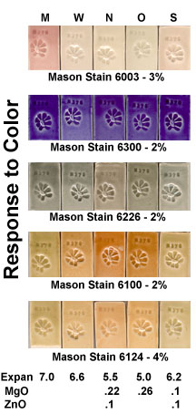
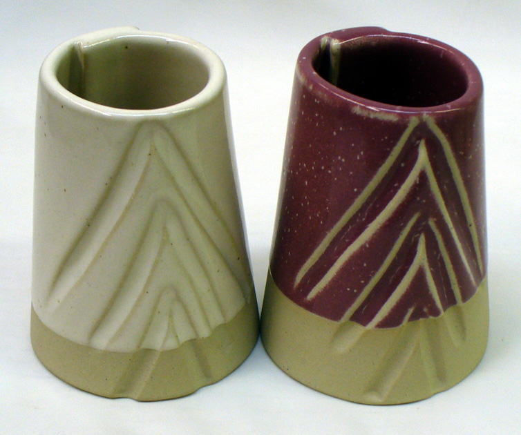

A Low Cost Tester of Glaze Melt Fluidity
A One-speed Lab or Studio Slurry Mixer
A Textbook Cone 6 Matte Glaze With Problems
Adjusting Glaze Expansion by Calculation to Solve Shivering
Alberta Slip, 20 Years of Substitution for Albany Slip
An Overview of Ceramic Stains
Are You in Control of Your Production Process?
Are Your Glazes Food Safe or are They Leachable?
Attack on Glass: Corrosion Attack Mechanisms
Ball Milling Glazes, Bodies, Engobes
Binders for Ceramic Bodies
Bringing Out the Big Guns in Craze Control: MgO (G1215U)
Can We Help You Fix a Specific Problem?
Ceramic Glazes Today
Ceramic Material Nomenclature
Ceramic Tile Clay Body Formulation
Changing Our View of Glazes
Chemistry vs. Matrix Blending to Create Glazes from Native Materials
Concentrate on One Good Glaze
Copper Red Glazes
Crazing and Bacteria: Is There a Hazard?
Crazing in Stoneware Glazes: Treating the Causes, Not the Symptoms
Creating a Non-Glaze Ceramic Slip or Engobe
Creating Your Own Budget Glaze
Crystal Glazes: Understanding the Process and Materials
Deflocculants: A Detailed Overview
Demonstrating Glaze Fit Issues to Students
Diagnosing a Casting Problem at a Sanitaryware Plant
Drying Ceramics Without Cracks
Duplicating Albany Slip
Duplicating AP Green Fireclay
Electric Hobby Kilns: What You Need to Know
Fighting the Glaze Dragon
Firing Clay Test Bars
Firing: What Happens to Ceramic Ware in a Firing Kiln
First You See It Then You Don't: Raku Glaze Stability
Fixing a glaze that does not stay in suspension
Formulating a body using clays native to your area
Formulating a Clear Glaze Compatible with Chrome-Tin Stains
Formulating a Porcelain
Formulating Ash and Native-Material Glazes
G1214M Cone 5-7 20x5 glossy transparent glaze
G1214W Cone 6 transparent glaze
G1214Z Cone 6 matte glaze
G1916M Cone 06-04 transparent glaze
Getting the Glaze Color You Want: Working With Stains
Glaze and Body Pigments and Stains in the Ceramic Tile Industry
Glaze Chemistry Basics - Formula, Analysis, Mole%, Unity
Glaze chemistry using a frit of approximate analysis
Glaze Recipes: Formulate and Make Your Own Instead
Glaze Types, Formulation and Application in the Tile Industry
Having Your Glaze Tested for Toxic Metal Release
High Gloss Glazes
Hire Us for a 3D Printing Project
How a Material Chemical Analysis is Done
How desktop INSIGHT Deals With Unity, LOI and Formula Weight
How to Find and Test Your Own Native Clays
I have always done it this way!
Inkjet Decoration of Ceramic Tiles
Is Your Fired Ware Safe?
Leaching Cone 6 Glaze Case Study
Limit Formulas and Target Formulas
Low Budget Testing of Ceramic Glazes
Make Your Own Ball Mill Stand
Making Glaze Testing Cones
Monoporosa or Single Fired Wall Tiles
Organic Matter in Clays: Detailed Overview
Outdoor Weather Resistant Ceramics
Painting Glazes Rather Than Dipping or Spraying
Particle Size Distribution of Ceramic Powders
Porcelain Tile, Vitrified Tile
Rationalizing Conflicting Opinions About Plasticity
Ravenscrag Slip is Born
Recylcing Scrap Clay
Reducing the Firing Temperature of a Glaze From Cone 10 to 6
Setting up a Clay Testing Program in Your Company or Studio
Simple Physical Testing of Clays
Single Fire Glazing
Soluble Salts in Minerals: Detailed Overview
Some Keys to Dealing With Firing Cracks
Stoneware Casting Body Recipes
Substituting Cornwall Stone
Super-Refined Terra Sigillata
The Chemistry, Physics and Manufacturing of Glaze Frits
The Effect of Glaze Fit on Fired Ware Strength
The Four Levels on Which to View Ceramic Glazes
The Majolica Earthenware Process
The Potter's Prayer
The Right Chemistry for a Cone 6 Magnesia Matte
The Trials of Being the Only Technical Person in the Club
The Whining Stops Here: A Realistic Look at Clay Bodies
Those Unlabelled Bags and Buckets
Tiles and Mosaics for Potters
Toxicity of Firebricks Used in Ovens
Trafficking in Glaze Recipes
Understanding Ceramic Materials
Understanding Ceramic Oxides
Understanding Glaze Slurry Properties
Understanding the Deflocculation Process in Slip Casting
Understanding the Terra Cotta Slip Casting Recipes In North America
Understanding Thermal Expansion in Ceramic Glazes
Unwanted Crystallization in a Cone 6 Glaze
Using Dextrin, Glycerine and CMC Gum together
Volcanic Ash
What Determines a Glaze's Firing Temperature?
What is a Mole, Checking Out the Mole
What is the Glaze Dragon?
Where do I start in understanding glazes?
Why Textbook Glazes Are So Difficult
Working with children
Formulating a Clear Glaze Compatible with Chrome-Tin Stains
Description
In ceramics color is often a matter of chemistry, that is, the host glaze must be compatible and have a sympathetic chemistry for the stain being added. Chrome-tin stains are a classic example.
Article
Coming up with a pink glaze may sound like an easy matter. All you do is find a good transparent glaze for the needed temperature, mix in 5%-10% pink stain, and you have it; right?
In the real world that most of us live in, things don't work out quite that well. While it is possible to obtain some sort of blue, green or brown glaze using almost any transparent recipe and the appropriate stain, chrome-tin pink stains do not work this way. The color will only develop in a melt that has a chemistry that is sympathetic to the specific mechanisms under which the color develops.
In a quest for a transparent recipe that will perform well with chrome-tin colors like lilac, coral, maroon, and pink, potters have traditionally used the "text-book junkie" approach. With this method, one rounds up tons of transparent recipes and tests each until both the correct surface quality and color are achieved (you also wind up with a room full of materials you will never use again). This method may succeed on the first test but it may not work until the 101st!
What we need is a more thoughtful, fast-track approach, leaving the trial and error stuff for fine-tuning the final product. We also need to understand why the final recipe works, and even better, why others are unsuccessful.
The key to solving these problems is to adopt the Kiln God's formula viewpoint. He builds ceramic structures from oxides like calcia, soda, alumina, and silica. Again, he obtains the oxides from the materials we supply in a glaze and ,for most purposes, does not care what material sources a particular oxide. It is reasonable then, to appraise fired results on the basis of the oxide formula, not the recipe of powders used to mix the raw glaze.
My first step in making the pink work was to mix the stain into my favorite cone 6 transparent glaze and fire a test. Of course, the result was a disaster; it was gray instead of pink! The question was: Why? The secret to the answer lies in examining the formula, not the recipe. First, I calculated the formula using desktop INSIGHT (of course the same can also be done in an account at the newer Insight-live.com).
Following are the results of the calculation in a detailed format.
DETAIL PRINT - 3134 Clear Glaze MATERIAL PARTS WEIGHT CaO* Na2O* B2O3 Al2O3 SiO2 WEIGHT OF EACH OXIDE 56.1 62.0 69.6 102.0 60.1 ----------------------------------------------------------------------- MATERIAL Expan OF EACH OXIDE 0.15 0.39 0.03 0.06 0.04 Cost/kg ----------------------------------------------------------------------- ------- FERRO FRIT 3134.... 50.00 190.64 0.18 0.08 0.17 0.39 2.49 KAOLIN............. 30.00 258.14 0.12 0.23 0.24 SILICA............. 20.00 60.00 0.33 0.19 ----------------------------------------------------------------------- ------- TOTAL 100.00 0.18 0.08 0.17 0.12 0.95 1.36 UNITY FORMULA 0.68 0.32 0.63 0.44 3.64 PER CENT BY WEIGHT 10.43 5.43 11.99 12.36 59.79 Cost/kg 1.36 Si:Al 8.21 SiB:Al 9.63 Expan 6.89
Next, I phoned the stain manufacturer, Mason in this case, and asked what to do. Fortunately, all answers were given from the formula viewpoint. They told me that the CaO content had to be at least 10% but that 15% would be better to assure color development. B2O3 should not be too high and a little extra CaO would help counteract the solvent action of B2O3 on the color development. I also checked a few textbook indexes under the topic "Chrome Tin Pink" and found a reference in Parmelee that confirmed this. It got more specific, stating that "Calcium oxide tends to counteract the ill effects of B2O3 , particularly when the ratio of CaO:B2O3 can be at least 3:1". Little bits of light were appearing. These facts seem obvious now but they are a commentary on how helpless we sometimes are.
I increased the calcium oxide, then reduced the B2O3 formula value to 1 / 3 of the CaO amount. Now that a major flux had been reduced in the glaze, I also determined that it would be necessary to cut the SiO2 and Al2O3 to harmonize with more traditional cone 5 limits (although I was conscious of needing the SiO2 to keep the expansion down and retain the gloss). Also I introduced a little MgO to help reduce higher expansion caused by the loss of Al 2O3and SiO2 .
The calculations produced a new recipe as follows.
WHITING 15.00 CaO 0.75* FERRO FRIT 3134 25.00 MgO 0.12* KAOLIN 20.00 Na2O 0.13* SILICA 20.00 B2O3 0.26 TALC 5.00 Al2O3 0.24 ======== SiO2 2.29 85.00 Cost/kg 0.87 Si:Al 9.49 SiB:Al 10.56 Expan 6.97
With bated breath and unwarranted confidence, I tested this glaze. The results: Complete failure! No color at all! Ah, but I was learning! The 3:1 CaO:B2O3 and 15% CaO alone were not enough to achieve the color. What is more, the glaze was crazing badly. The measures I had taken to make up for the loss of SiO2 and Al2O3 were not enough. My 'Parmelee' textbook also mentioned that the SiO2 has a stabilizing influence and can also reduce the solvent bleaching action of B2O3 on the development of color.
I ran another test, increasing the SiO2 and MgO to lower the expansion.
WHITING 14.90 CaO 0.69*
FERRO FRIT 3134 28.60 MgO 0.17*
KAOLIN 22.30 Na2O 0.13*
SILICA 26.30 B2O3 0.26
TALC 8.00 Al2O3 0.24
======== SiO2 2.53
100.10
Cost/kg 0.85
Si:Al 10.62
SiB:Al 11.72
Expan 6.65
What were the results? Again, disaster! This time, I even lost the gray color, ending up with nothing but a clear glaze even with 10% pink stain! There is no question that I was learning. As Thomas Edison said when asked what he had learned in life: "I have discovered thousands of things that don't work!"
Well, back at the textbooks, I kept reading about the detrimental effects of zinc on this type of glaze, however, there was no zinc to remove.
Then I found another clue. One short sentence in the middle of a 6-page marathon of chemistry on chrome-tin stain topics said: "This stain also is unstable in the presence of MgO." I had introduced this very oxide early on to help keep the expansion down and had increased it in a subsequent test.
Few things disagree with magnesia but it was worth a try. So I removed the MgO and replaced it with even more CaO.
Here is how the recipe looked
Pink Glaze Base #4 ================== WHITING............. 37.70 18.85% FERRO FRIT 3134..... 55.80 27.90% KAOLIN.............. 35.50 17.75% SILICA.............. 50.70 25.35% CORNWALL STONE...... 20.30 10.15% ======== 200.00
CaO 0.84* 18.29%
MgO 0.00* 0.02%
K2O 0.01* 0.49%
Na2O 0.15* 3.63%
Fe2O3 0.00* 0.03%
TiO2 0.00 0.01%
B2O3 0.26 7.18%
Al2O3 0.24 9.70%
SiO2 2.59 60.65% Cost/kg 0.81
Si:Al 10.61
SiB:Al 11.69
Expan 7.23
Guess what? I hit the jackpot! This time 10% pink stain gave color that would knock your eyes out. However, there was some crazing on porcelain, but this was not a problem since the glaze melts well and thus there is room for an increase in SiO2 or the B2O3 :Al2O3 :SiO2 complement, neither of which should affect color.
This project really demonstrated that you can learn much when something is unsuccessful. Every time a fired product comes out of the kiln, whether success or failure, you can relate its appearance to the formula and learn something valuable.
Related Information
G1214M, W, N, O and S with Mason stains

This picture has its own page with more detail, click here to see it.
This shows clearly how well the M version works with a chrome-tin stain compared to the others. However the 6100 brown stain works best in the N recipe (which have MgO). Notice also that the M has a higher thermal expansion than the others.
A glaze incompatible with chrome-tin stains (but great with inclusion stains)

This picture has its own page with more detail, click here to see it.
Left: A cone 6 matte glaze (G2934 with no colorant). Middle: 5% Mason 6006 chrome-tin red stain added. Right: 5% Mason 6021 encapsulated red stain added. Why is there absolutely no color in the center glaze? This host recipe does not have the needed chemistry to develop the #6006 chrome-tin color (Mason specifies 10% minimum CaO, this almost has enough at 9.8%, but it also has 5% MgO and that is killing the color). Yet this same glaze produces a good red with #6021 encapsulated stain at only 5% (using 20% or more encapsulated stain is not unusual - so achieving this color with only 5% is amazing).
Ravenscrag Cone 6 white glaze with 10% Mason chrome tin stain

This picture has its own page with more detail, click here to see it.
The body is Plainsman M340 and these two glazes are based on the GR6-A recipe (Ravenscrag Slip + 20% frit). The GR6-C creamy white glaze adds 10% Zircopax to opacify it. The pink version, our code number GR6-L, adds Mason 6006 stain instead. The GR6-A base is zinc-free and just hits the 10% minimum CaO recommended to get color development with a chrome tin stain. This recipe also couples a low MgO level (MgO can kill the color in chrome tin stains).
Bad and good glaze application: The difference was the rheology.

This picture has its own page with more detail, click here to see it.
This is GR6-L, is the standard GR6-A Ravenscrag Slip cone 6 base recipe + 10% chrome tin stain (the body is Midstone, the inside glaze is G2926B, the firing schedule is C6DHSC). Chrome tin stains are picky about their host glaze, if it does not have a compatible chemistry they fire grey. Obviously, there is a love affair going on here! But the mug on the left has an issue. The glaze on the left has gone on in varying thicknesses and these are producing crystallizations and runs and the incising is not being highlighted. The one on the right is under control. What is the difference? The rheology of the slurry for the bad mug was wrong - the specific gravity was too high (the water content was too low). Even on a quick dip it was building thickness unevenly and way too fast. And there were drips that were so big they had to be shaved off with a knife! After the addition of a lot of water, to take the specific gravity from 1.55 to 1.45 it was watery enough to accept some Epsom salts to make it thixotropic. The difference was amazing, it went on totally smooth without a single drip, producing the result on the right.
Links
| Materials |
Stain
|
| Troubles |
Chrome Flashing in Ceramic Glazes
The development of chrome tin pinks is a combination of the stain and the right chemistry in the host glaze. Unwanted pink flashing occurs where there is a hostile chemistry in the glaze. |
| Oxides | SnO2 - Tin Oxide, Stannic Oxide |
| Oxides | Cr2O3 - Chrome Oxide |
| Projects |
Stains
|
 PayPal | No tracking, No ads, No paywall, No transient content! Just organized, concise information constantly updated and improved. Was this helpful? Consider supporting me. |
| By Tony Hansen Follow me on        |  |
Got a Question?
Buy me a coffee and we can talk 

https://digitalfire.com, All Rights Reserved
Privacy Policy